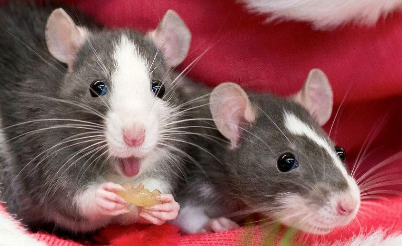

Тварини
Немає такої частини рослинного організму, яка б не пошкоджувалася тваринами. Шкідник – це живий організм, який живиться рослиною, або завдає їй якоїсь певної шкоди (деформує, обламує). Масштаби пошкоджень можуть бути зовсім незначними (наприклад, обгризання поодиноких листків), або масштабними, які стають причиною загибелі рослин чи суттєвого погіршення їх стану. Завдають шкоди рослинам комахи, павукоподібні, молюски, черв'яки, птахи та ссавці.
